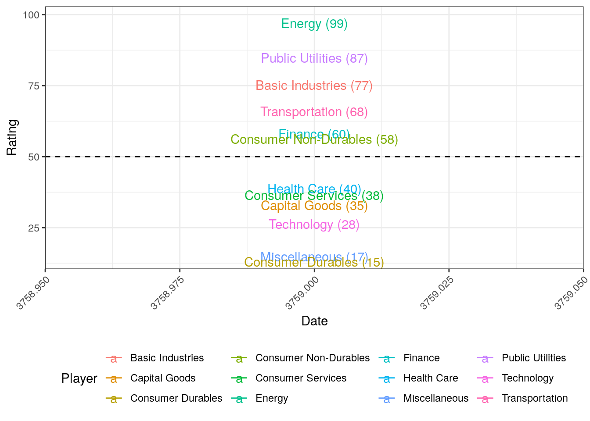
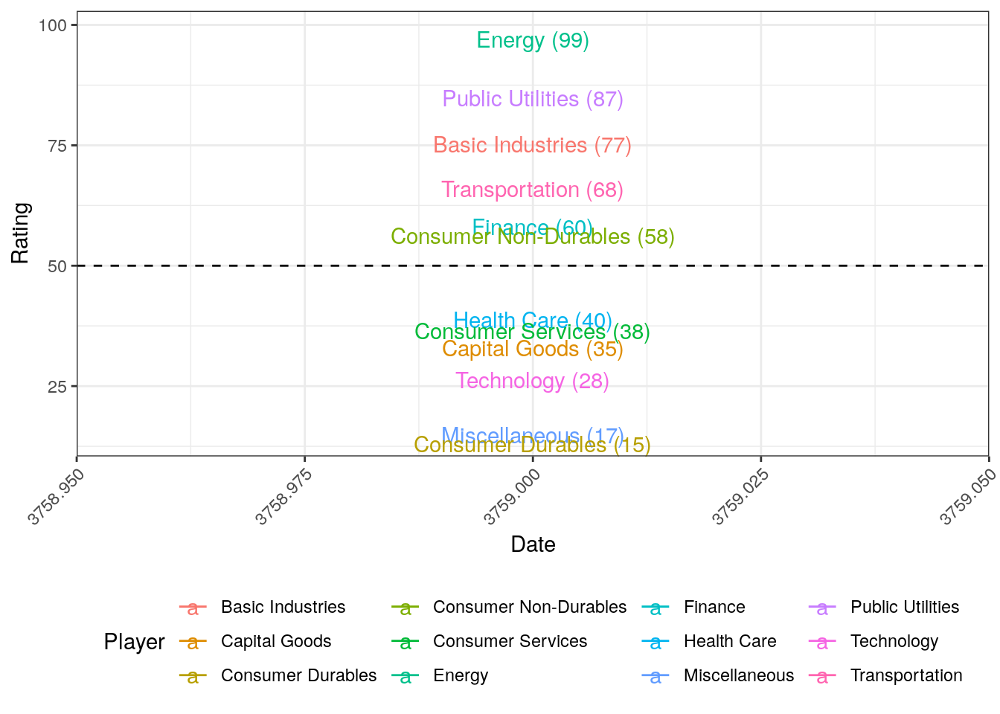
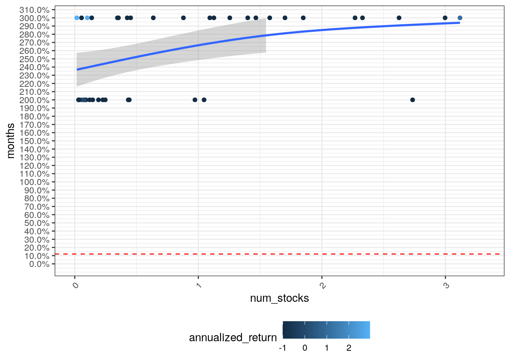
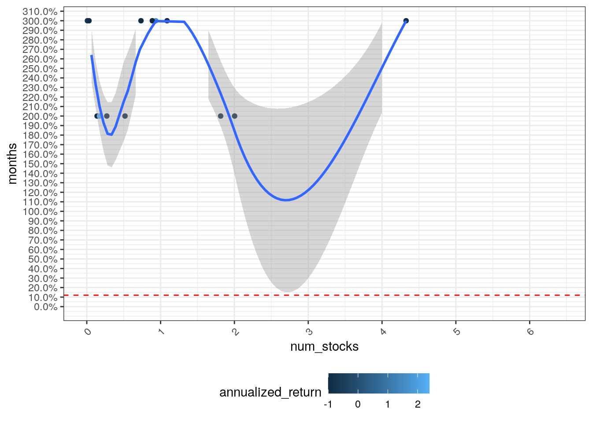
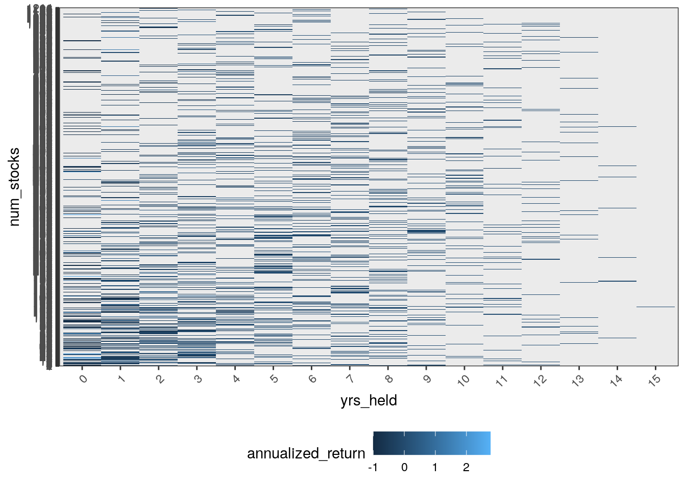
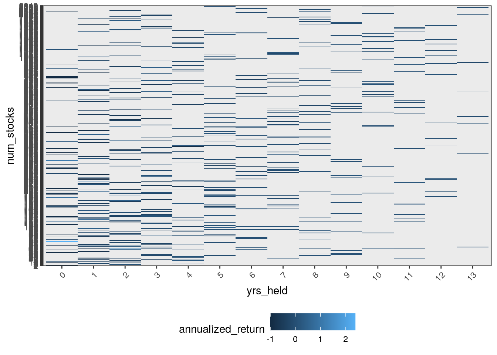

Sector Rotations
## # A tibble: 99 × 5
## # Groups: Sector [13]
## Date Sector Growth Trend Value
## <date> <chr> <dbl> <chr> <dbl>
## 1 2008-12-04 "" 0.00137 Uptrend 1
## 2 2010-05-17 "" 0.0513 Uptrend 1
## 3 2012-08-21 "" 0.0172 Uptrend 1
## 4 2014-05-01 "" 0.0132 Uptrend 1
## 5 2009-03-16 "Basic Industries" 0.00707 Uptrend 1
## 6 2010-08-17 "Basic Industries" 0.00904 Uptrend 1
## 7 2009-07-08 "Capital Goods" 0.0000697 Uptrend 1
## 8 2011-12-14 "Capital Goods" 0.00250 Uptrend 1
## 9 2016-01-27 "Capital Goods" 0.0183 Uptrend 1
## 10 2009-08-03 "Consumer Durables" 0.0252 Uptrend 1
## # … with 89 more rows
## # A tibble: 13 × 6
## # Groups: Sector [13]
## Date Sector Growth Trend Value Days_Since_Flip
## <date> <chr> <dbl> <chr> <dbl> <dbl>
## 1 2011-06-06 "Basic Industries" -0.0234 Downtrend 1 3969
## 2 2014-09-24 "Energy" -0.0703 Downtrend 1 2763
## 3 2014-11-19 "" -0.0379 Downtrend 1 2707
## 4 2015-02-11 "Public Utilities" -0.0572 Downtrend 1 2623
## 5 2015-07-07 "Transportation" -0.00429 Downtrend 1 2477
## 6 2014-08-07 "Miscellaneous" 0.119 Uptrend 1 2811
## 7 2014-09-24 "Health Care" 0.000752 Uptrend 1 2763
## 8 2014-10-01 "Consumer Services" 0.0365 Uptrend 1 2756
## 9 2014-10-01 "Technology" 0.0154 Uptrend 1 2756
## 10 2014-11-05 "Consumer Non-Durables" 0.00403 Uptrend 1 2721
## 11 2014-12-02 "Finance" 0.00159 Uptrend 1 2694
## 12 2015-02-11 "Consumer Durables" 0.107 Uptrend 1 2623
## 13 2016-01-27 "Capital Goods" 0.0183 Uptrend 1 2273
## # A tibble: 13 × 2
## Sector n_
## <chr> <int>
## 1 "" 9
## 2 "Basic Industries" 5
## 3 "Capital Goods" 6
## 4 "Consumer Durables" 7
## 5 "Consumer Non-Durables" 7
## 6 "Consumer Services" 5
## 7 "Energy" 7
## 8 "Finance" 5
## 9 "Health Care" 11
## 10 "Miscellaneous" 7
## 11 "Public Utilities" 10
## 12 "Technology" 14
## 13 "Transportation" 6

## # A tibble: 13 × 2
## Sector sd_
## <chr> <dbl>
## 1 "" 185.
## 2 "Basic Industries" 85.2
## 3 "Capital Goods" 260.
## 4 "Consumer Durables" 291.
## 5 "Consumer Non-Durables" 256.
## 6 "Consumer Services" 361.
## 7 "Energy" 265.
## 8 "Finance" 457.
## 9 "Health Care" 155.
## 10 "Miscellaneous" 243.
## 11 "Public Utilities" 234.
## 12 "Technology" 106.
## 13 "Transportation" 327.


Elo approach
 

Buy and Hold Simulation






##
## Call:
## lm(formula = annualized_return ~ num_stocks + duration, data = returns %>%
## dplyr::mutate(annualized_return = gains^(1/(duration/365.25)) -
## 1))
##
## Coefficients:
## (Intercept) num_stocks duration
## 9.244846 0.002918 -0.003941